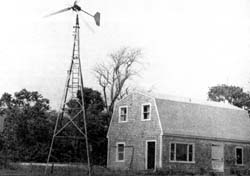

The Morgan family's barn/workshop is now a ""private utility"" too! A bank of 20 batteries is on the floor beneath the workbench while the black box on the bench contains diodes which convert AC electricity (from the windplant) to DC (for storage in the batteries). The box mounted on the wall (with its door open) is the famous Gemini Synchronous Inverter which makes it possible for the Morgans to feed their wind generator's excess electrical output directly into the local power company's distribution network. The coil on top of the GSI box is a ""choke"". .. which helps to suppress overloads (caused by sudden gusts of wind) from the generator.